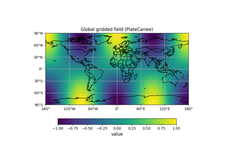
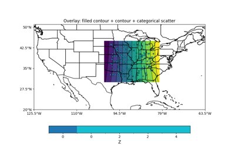

Map Plots#
Discrete fields in MapGridded and MapScatter support integer_field=True. See note in Explanations.

Global gridded (PlateCarree) with coastlines
Global gridded (PlateCarree) with coastlines

Overlay: filled contour + contour + scatter
Overlay: filled contour + contour + scatter